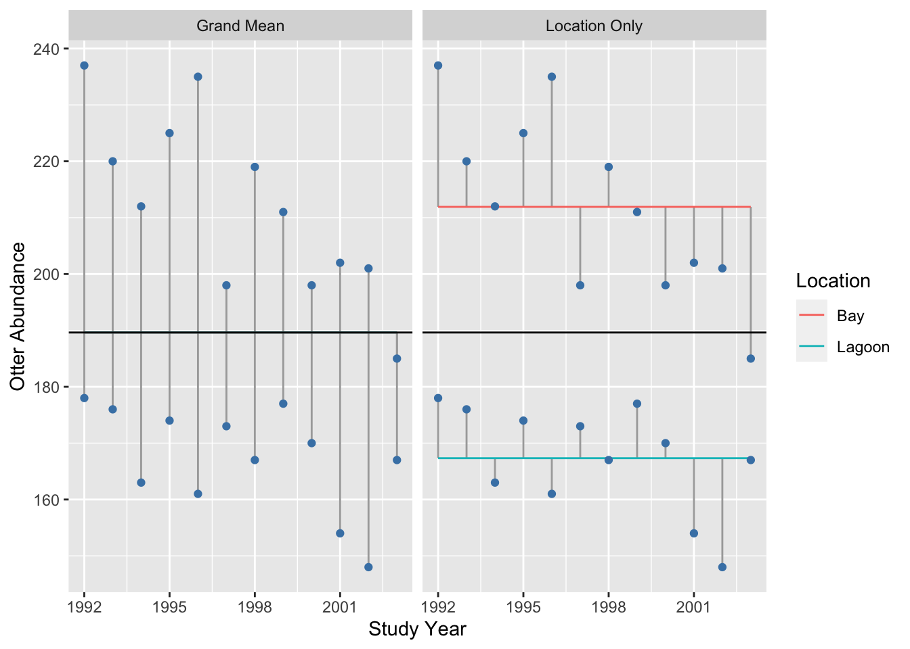
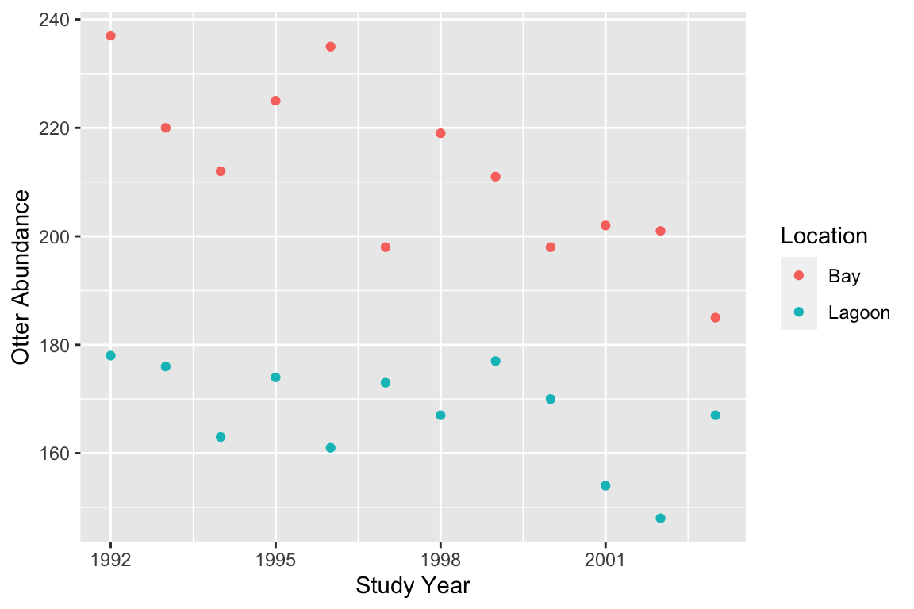
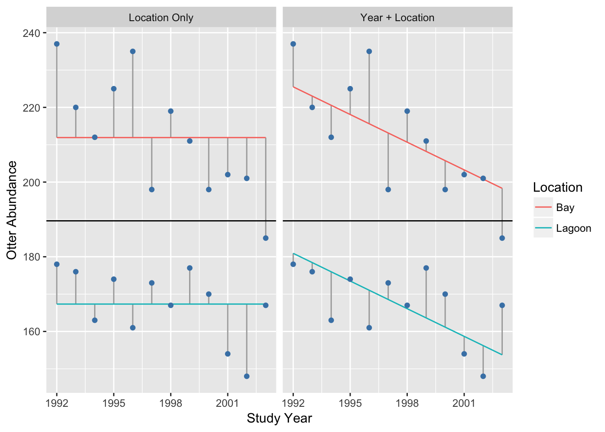
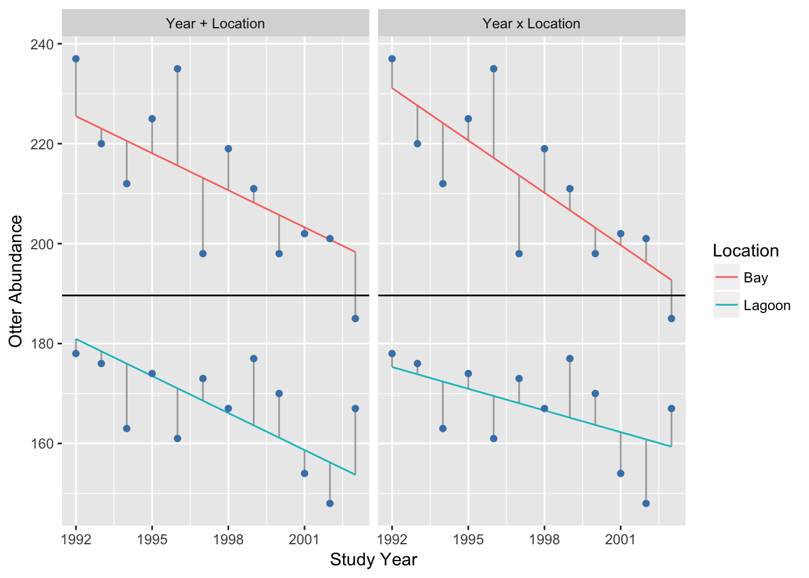

Chapter 28 Introduction to ANCOVA
28.1 Introduction
One-way ANOVA allows us to determine whether there are significant differences between the effects of two or more treatments, while two-way ANOVA allows us to combine two factors in a single experiment to explore the main effects of each treatment and their interaction. We can think of ANOVA as a type of statistical model in which the predictor variables are categorical. We have also seen that simple linear regression is used to describe the relationship between two numeric variables; it tells us how the response variable changes in response to the predictor variable.
When described like this, ANOVA and regression do not seem all that different. The only thing that distinguishes them is the type of predictor variable they accommodate. An obvious question is then, what happens if we have a mixture of categorical and numeric predictor variables? In this situation we use Analysis of Co-variance (ANCOVA) to analyse our data. Two-way ANCOVA is used when there are two predictor variables: one categorical variable and one numeric variable.
28.2 Why do we need ANCOVA models?
Let’s consider an example of when an ANCOVA might be useful. Following a period of recovery from overhunting, sea otter (Enhydra lutris) populations in western Alaska began declining in 1990s. A team of marine scientists hypothesised that rising killer whale abundances—leading to greater rates of predation—was driving this change. They set out to evaluate the impact of killer whales on sea otter populations at Plah Island, Alaska, by contrasting sea otter trends between Holdi Lagoon, an area inaccessible to killer whales, and the adjacent Handae Bay, an open coastal environment.
| Location | Year | 1992 | 1993 | 1994 | 1995 | 1996 | 1997 | 1998 | 1999 | 2000 | 2001 | 2002 | 2003 |
|---|---|---|---|---|---|---|---|---|---|---|---|---|---|
| Holdi Lagoon | 178 | 176 | 163 | 174 | 161 | 173 | 167 | 177 | 170 | 154 | 148 | 167 | |
| Handae Bay | 237 | 220 | 212 | 225 | 235 | 198 | 219 | 211 | 198 | 202 | 201 | 185 |
Notice that these data resemble a fully factorial, two-way ANOVA design (but without replication), where the predictors are year and location. Two-way ANOVA and ANCOVA are quite similar in many respects.
We could plot these data by creating two different subsets (e.g. using the dplyr function filter)—one for each location—and plotting each in turn as a separate scatter plot. However, unless the abundances of sea otters are very different, it is better to plot everything on the same figure so the abundances at each location can be compared. We need to ensure the data from each location are clearly delineated. We can do this is a number of ways, for example by giving the points different colours as follows.

Variables and axes
Just as with a regression analysis you should be careful here to make sure the two variables are plotted the right way around with respect to the x and y axes: place the response variable on the y axis and the numeric predictor on the x axis. The groups defined by the categorical variable are given different colours (or shapes, or panels, etc).
This indicates that sea otter abundances have declined in both locations, and as predicted, the decline seems to be greater where sea otters were exposed to predation from killer whales (the bay location).
How should we analyse these data? It might be tempting to carry out two separate linear regressions of otter abundance against study year. If we do this when we consider just the data from the lagoon population, we do not find a significant effect of year on otter abundance (p=0.062), but we do find a significant effect of year in the bay population (p<0.01). It is tempting to conclude that because there is a significant effect of year on otter abundance in one location but not the other, the population trends are ‘different’. This reasoning is flawed. In fact, if we we want to establish whether or not the trend is different at each location, we have to have to analyse them together. This is where ANCOVA becomes useful.
28.3 How does ANCOVA work?
We can think of two-way ANCOVA as a cross between simple regression and two-way ANOVA. Similar to simple regression, a two-way ANCOVA finds straight-line relationships that best describes the response of one variable (the response variable) on another (the numeric predictor variable), but does so for separate groups of data (defined by the categorical predictor variable).
Selecting which variable is to be used as the response and which as the predictor variable is usually straightforward. In our example, the investigators set out to understand how otter densities change with respect to time, and so logically, otter abundance depends on year. It is very hard to imagine a situation whereby it make sense to predict study year from otter abundances.
An ANCOVA describes, within each group, how the response variable changes with a unit change in the value of the predictor variable. ANCOVA works in essentially the same way as ANOVA or regression. It seeks the set of lines (one for each group) that leaves the smallest total sum of the squared residuals. Remember, residuals are vertical distances between a fitted line and each data point, measured parallel to the \(y\)-axis. Just as with regression, the residuals are the ‘bits left over’ after a line has been fitted. The size of the residuals gives an indication of how well the line fits the data. The following illustration shows the best fit model and associated residuals for our example:

A two-way ANCOVA on these data will tell us whether otter abundance is related to (1) study year (i.e. the trend) and (2) study site, and (3) whether the effect of year depends on study site. So just like two-way ANOVA, there are three terms to consider: two main effects and one interaction.
28.4 Degrees of freedom, mean squares and F-statistics
The statistical significance of the main effects and the interaction are evaluated by examining changes in sums of squares. The statistical significance of each of these terms is evaluated by calculating how much variability in the response variable is ‘explained’ by each term in the model. In practise, this is done by calculating a sum of squares for each term. We can get a sense of how these calculations work by contrasting the residuals associated with different ‘models’ of the data.
To understand the location term, we contrast the residuals associated with the overall grand mean (left panel) with those associated with separate means for each location (right panel): 
It seems clear from this plot that adding a location effect (i.e. allowing for different means) explains a lot of variation, because the residuals (i.e. the lengths of the vertical lines) are much smaller in the right panel.
What about the effect of year? To understand the year term, we visualise the residuals associated with separate means for each location (left panel) vs. the residuals when we include a separate mean for each location and a common year slope:

The phrase ‘common slope’ refers to the fact that we found the best fit model under a constraint, whereby the year slope was forced to be the same in each location. Adding a common year effect explains some variation, though the change in the size of the residuals is clearly smaller than when we added the location effect.
Finally, to understand the interaction term, we can compare the residuals generated when a separate mean for each location and a common year slope is included (left panel), to the case that includes a location-specific mean and year slope (right panel):

Adding the interaction only explains a small amount of variation, i.e. the change in the size of the residuals is even smaller than when we added the year term.
We could take this analysis further by actually calculating the change in sum of squares that occurs as we add a term. However, at this point, we really just want to get a sense of how ANCOVA works using a visual assessment of the change in the residuals. In terms of the variability they explain, it looks like the order is…
main effect of location >> main effect of year >> interaction
(N.B. To do this analysis ‘properly’ we should also account for the degrees of freedom associated with each term. R will do this for us though, so we won’t worry about the degrees of freedom now.)
28.5 Assumptions of ANCOVA
The assumptions underlying analysis of co-variance are no different from regression and ANOVA:
Independence. The residuals must be independent.
Measurement scale. The response (\(y\)) and the numeric predictor variable (\(x\)) variable are measured on interval or ratio scales.
Linearity The relationship between the numeric predictor variable (\(x\)) and the response (\(y\)) variable is linear within each group.
Normality. The residuals are drawn from a normal distribution.
Constant variance. The variance of the residuals is constant.
Measurement error. The values of the numeric predictor variable (\(x\)) are determined with negligible error.
We will not go through each of these in detail because their meaning should be obvious by this point in the course.
Unbalanced or non-orthogonal designs
Similar to ANOVA, in an ideal world the data used for ANCOVA should be balanced and orthogonal, i.e., every possible combination of values of the independent variables is represented (orthogonal), with equal numbers of observations in each combination (balanced). The analysis workflow that we teach you in this course assumes a balanced, orthogonal design. ANCOVA crops up a lot in observational studies, where it is frequently difficult (or impossible) to ensure these conditions are met. If your experimental design or data collection protocol is not balanced and orthogonal, you should speak to someone who has a good knowledge of statistics before you collect any data to obtain guidance about how to analyse the resulting data.